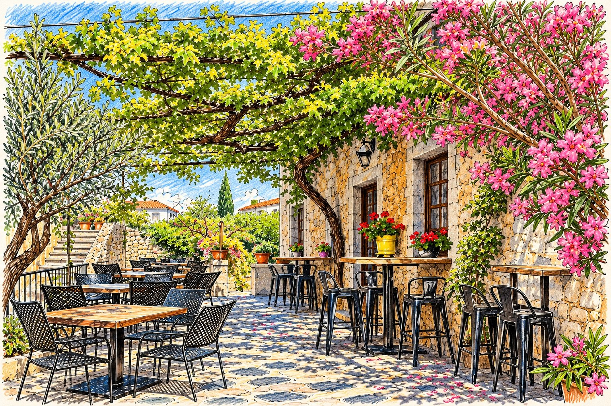
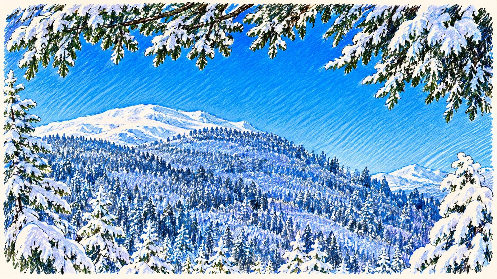
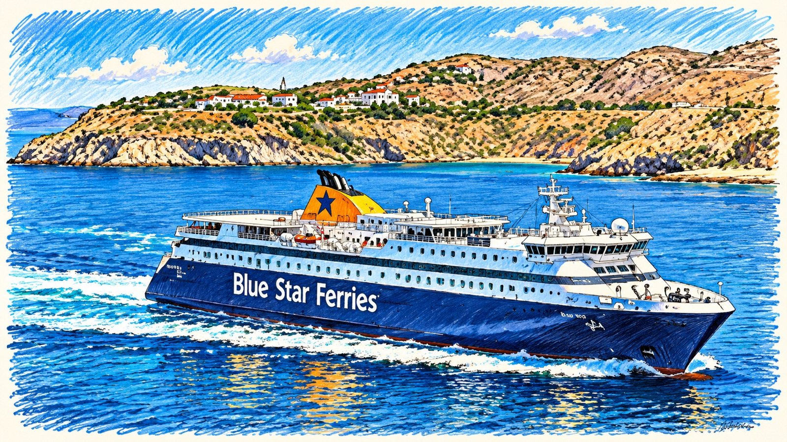

If you think Greece is all blazing sunshine, blue skies and temperatures that make your car's steering wheel feel like a freshly baked pizza, you'd be forgiven. For much of the year, that's exactly what you get. But Greece is a country of two rather different personalities. There's the summer version, where the beaches are packed, the tavernas are buzzing and the temperature gauge appears to have given up. And then there's winter, when the pace slows, the tourists disappear and some seaside resorts look as though someone has pulled the plug and gone home.
So, when should you go? Well, that depends on what you're after. If it's wall-to-wall sunshine and swimming in warm seas, summer is your friend. If you'd rather explore ancient ruins, wander around pretty towns and enjoy a leisurely lunch without melting into your chair, spring and autumn might be considerably more appealing.
And if you fancy skiing in Greece, yes, actual skiing, then winter has a surprise or two up its sleeve.
SUMMER: JULY AND AUGUST – BRING YOUR OWN OVEN GLOVES

July and August are the months when Greece turns up the thermostat and then appears to lose the instruction manual.
Temperatures regularly reach 30–35°C, and inland areas can get considerably hotter. In the Peloponnese, coastal resorts such as Stoupa, Kardamyli and Nafplio can be gloriously hot, while inland towns are often baking. The mountains offer some relief, although don't expect air conditioning from a pine tree.
The advantages are obvious. Everything is open. Beach bars are busy, boat trips are operating, ferries are running their fuller summer schedules and the islands are in full swing. There's a wonderful atmosphere, particularly in the evenings when everyone emerges from their air-conditioned hiding places to eat, drink and socialise.
The disadvantages? Crowds, higher accommodation prices, busy roads and the occasional feeling that you've been accidentally booked into a giant outdoor sauna.
July and August are also peak holiday months for Greek families, particularly around 15 August, a major religious holiday when domestic travel increases considerably.
SPRING: APRIL AND MAY – GREECE WAKES UP
Spring is when Greece starts showing off in a completely different way. The countryside is green, wildflowers appear everywhere and the hillsides are covered in colour. After the winter rains, the landscape can look spectacular.
Temperatures generally climb from around 16–23°C in April to 21–27°C in May, depending on where you are. It's excellent weather for exploring archaeological sites, walking, driving around the Peloponnese and discovering villages without needing to carry your own personal cooling system.
Easter is particularly special in Greece. It's the most important celebration in the Greek Orthodox calendar, with church services, processions, fireworks and family gatherings.
One thing to remember is that the sea is still relatively cold, particularly in April. You might manage a swim, but you won't necessarily want to stay in long enough to qualify for a documentary about endurance swimming.
May is a particularly good month. Most seasonal businesses have reopened, the days are getting longer and the summer crowds haven't arrived in force.
AUTUMN: SEPTEMBER AND OCTOBER – OUR FAVOURITE TIME
If we had to choose one time of year to visit Greece, September would be very difficult to beat.
The sea has spent all summer warming up, so it's often warmer than it was in May or June. The really intense heat begins to ease, the school holiday crowds disappear and accommodation prices can become much more reasonable.
September temperatures are generally around 25–30°C, although hotter days are certainly possible. October is cooler, typically around 20–25°C during the day in many southern coastal areas.
For us, the Peloponnese is particularly lovely at this time of year. Places like Stoupa, Limeni, Nafplio and Kardamyli still have plenty of life, the beaches are less crowded and you can enjoy a leisurely lunch without fighting for a table.
October can also be a brilliant month, particularly in the first half. You can still enjoy swimming, sightseeing and road trips, although the weather becomes less predictable as the month progresses.
There is, however, one important catch. October is when the Greek tourist season begins to wind down. And it doesn't happen everywhere at the same time.
WHEN GREECE STARTS CLOSING ITS DOORS
This is something worth understanding before booking a late-season holiday.
Greece doesn't actually close for winter. The Greeks still have to eat, shop and go to work, rather inconveniently for anyone hoping to have an entire island to themselves. What closes is the tourist industry.
On many of the smaller islands, hotels, beach bars, restaurants, boat trips and tourist shops begin shutting from late September or October. By November, some places are almost unrecognisable compared with their summer selves.
Santorini and Mykonos, for example, become much quieter once the summer crowds disappear. Smaller islands in the Cyclades can be particularly quiet, with limited accommodation and very few restaurants operating.
The bigger islands have a different story.
- Crete: Heraklion and Chania have substantial year-round populations, so cafés, shops and restaurants continue operating, although resort areas become quieter.
- Rhodes: Rhodes Town remains lively throughout the year, with plenty of local businesses open.
- Corfu: Corfu Town has a life beyond tourism, so it remains a functioning town through winter, although many beach resorts close.
- Syros: Ermoupoli is a proper working town and remains active throughout the year.
On the mainland, places such as Athens, Nafplio, Kalamata and Thessaloniki continue operating throughout winter.
The important distinction is between a town where people actually live all year and a resort that exists largely to accommodate summer visitors.
WHAT ABOUT THE PELOPONNESE?
This is where things get interesting, because the Peloponnese is not simply a summer destination.
Towns such as Kalamata, Nafplio and Pylos have year-round communities, so you'll find cafés, supermarkets, bakeries and restaurants open throughout the winter.
However, smaller coastal resorts such as Stoupa and Agios Nikolaos in the Mani can become very quiet. Some tavernas and accommodation businesses close at the end of October and don't reopen until Easter or May.
You'll still find places open, particularly those serving local residents, but don't expect the same choice you would have in July.
And there's something rather lovely about seeing these places without the summer crowds. You get a much better feel for everyday Greek life, although finding somewhere for a spontaneous evening cocktail might require a little more planning.
WINTER IN GREECE – YES, IT REALLY DOES GET COLD

It's easy to forget that Greece has a winter. After all, most of us associate it with beaches, sunshine and the occasional glass of something cold.
But between November and March, temperatures can drop considerably.
In southern coastal areas, daytime temperatures are often around 12–17°C in winter, with January and February generally the coldest months. Nights can be chilly, particularly inland.
Athens is generally milder, with winter temperatures often around 7–15°C. Northern Greece and the mountainous interior can be considerably colder, with frost and snow.
The Greek Meteorological Service describes the winter season as generally mild and wet in the lowlands, but the mountains are frequently snow-covered.
And here's something you might not have considered.
YOU CAN GO SKIING IN THE PELOPONNESE!
Yes, while people are enjoying lunch beside the sea in Kalamata, you can potentially be skiing in the mountains of the Peloponnese.
There are two ski areas worth knowing about.
Kalavryta Ski Centre
Located on Mount Helmos, this is the largest ski resort in the Peloponnese. At around 2,340 metres, it has 12 pistes covering approximately 20 kilometres, with seven lifts. There's skiing for beginners through to experienced skiers, as well as snowboarding.
The nearby town of Kalavryta is also worth visiting, with traditional cafés, tavernas and stone-built streets.
Mainalo Ski Centre
Further south, in the mountains of Arcadia, you'll find Mainalo Ski Centre. It has eight pistes, four lifts and around 5.5 kilometres of ski runs.
It's surrounded by beautiful fir forests and traditional mountain villages, including Vytina, Dimitsana and Stemnitsa. These are lovely places to explore in winter, even if you have absolutely no intention of attaching two planks of wood to your feet.
GETTING TO GREECE IN WINTER – FLIGHTS AREN'T QUITE AS STRAIGHTFORWARD
This is an important consideration if you're thinking of visiting Greece outside the traditional holiday season.
Kalamata Airport
If you're flying into the Peloponnese, you'll probably be looking at Kalamata International Airport.
During the summer, it has a growing selection of direct flights from the UK, including London Gatwick, Manchester, Birmingham, Bristol and Edinburgh, depending on the airline and season.
However, most of these are seasonal services. They generally operate between spring and autumn, with some routes finishing in October or early November.
In winter, the choice becomes much more limited. The useful exception is the domestic connection between Kalamata and Athens, which is listed as operating throughout the year with Aegean Airlines. There are also domestic connections to Thessaloniki.
So, if you fancy a winter break in the Peloponnese, you may need to fly into Athens and hire a car, or connect through Athens to Kalamata.
Athens Airport
Athens International Airport is the much safer option for winter travel.
Unlike many regional airports, Athens operates international flights throughout the year, including services from the UK. You'll generally have far more choice of airlines, departure times and connections.
It's also a good starting point for exploring mainland Greece, with Nafplio, the northern Peloponnese and the mountain villages all accessible by car.
FERRIES – DON'T ASSUME THE SUMMER TIMETABLE APPLIES

If you're planning to island-hop, this is another area where the seasons make a big difference.
During summer, ferries operate frequent services between the islands and the mainland. High-speed boats, conventional ferries and smaller passenger services make getting around relatively straightforward.
But as autumn arrives, timetables start changing.
High-speed services often finish for the season, less popular routes become less frequent and some smaller islands may only have a handful of sailings each week.
During winter, the main ferry routes continue serving the larger inhabited islands, but connections between smaller islands can be considerably reduced.
Weather is another factor. Strong winds and rough seas can cause delays or cancellations, particularly during winter. This can make a tightly planned island-hopping itinerary rather optimistic.
A few things worth remembering:
- Check ferry timetables for the actual month you're travelling, not just the summer schedule.
- Don't assume a ferry runs every day.
- Allow flexibility if you're connecting between islands.
- Avoid leaving a critical flight connection dependent on the last ferry of the day.
- Check timetables again nearer departure, as seasonal schedules can change.
Websites such as Ferryhopper are useful for checking routes and booking tickets, but always confirm the operator's latest sailing information.
And remember, just because a ferry sailed every day in August doesn't mean it will still be doing so in January.
SO, WHEN WOULD WE RECOMMEND GOING?
It really depends on what sort of Greece you want to experience.
| Time of year | What to expect | Our verdict |
|---|---|---|
| April–May | Warm days, green countryside, quieter beaches | Excellent for exploring |
| June | Hot, sunny, everything open | Fantastic |
| July–August | Very hot, busy and expensive | Best for peak summer holidays |
| September | Warm sea, fewer crowds, plenty open | Our favourite |
| October | Pleasant weather, quieter resorts, seasonal closures begin | Excellent early in the month |
| November–March | Cooler, quieter, some businesses closed | Best for mainland exploring |
Our personal choice would be late May, June or September, particularly for exploring the Peloponnese.
September gets our vote because you get the best of both worlds: warm seas, long sunny days, fewer tourists and still plenty of tavernas serving enormous plates of food that were clearly intended for a family of six.
But don't dismiss winter. If you enjoy exploring historic towns, walking, mountain scenery, skiing and experiencing Greece away from its tourist season, there's plenty to discover.
Just don't arrive in a tiny seaside resort in January expecting to find 20 restaurants open, a beach bar serving cocktails and someone waiting to hire you a boat.
You might find a bakery, a supermarket and one very friendly taverna. And actually, that might be rather nice.
And if all else fails, there's always a Greek mountain village, a roaring log fire and a glass of something warming.
Now that's not a bad way to spend a winter either.
Temperatures, flights, ferry timetables and opening times change from year to year, so always check the latest details before you travel.